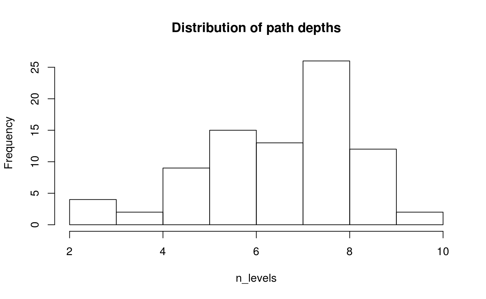

This vignette describes the functions that have not yet been described in other vignettes, one by one.
The function, data_frame_to_paths() converts a subdirectory matrix that has been converted to a data frame back to the paths by pasting all non-empty columns with slashes. Short paths must have empty values "" (and not NA) in the last columns:
# Create subdirectory matrix
subdir_matrix <- kwb.file::to_subdir_matrix(paths)
# Convert to data frame
subdir_data <- kwb.utils::asNoFactorDataFrame(subdir_matrix)
# Reconstruct the paths from this data frame
paths_reconstructed <- kwb.pathdict:::data_frame_to_paths(subdir_data)
# Check that the paths have not changed
identical(paths_reconstructed, paths)
#> [1] TRUEThis function checks if a string looks like a <placeholder>:
kwb.pathdict:::is_placeholder("abc")
#> [1] FALSE
kwb.pathdict:::is_placeholder("<abc>")
#> [1] TRUE
kwb.pathdict:::is_placeholder(c("<abc>", "<def>", "ghi", "<jkl>"))
#> [1] TRUE TRUE FALSE TRUE
kwb.pathdict:::is_placeholder("<abc>def")
#> [1] FALSE
kwb.pathdict:::is_placeholder("<abc><def>")
#> [1] FALSE
kwb.pathdict:::is_placeholder("<>")
#> [1] FALSE
kwb.pathdict:::is_placeholder("[abc]")
#> [1] FALSE
#> Distribution of path depths:
#> n_levels
#> 2 3 4 5 6 7 8 9 10
#> 1 3 2 9 15 13 26 12 2
#> i = 1, n = 83...
#> utils::head(y):
#> space
#> 415
#> i = 2, n = 83...
#> utils::head(y):
#> x
#> space/moon space/usual space/share.xls space/office
#> 640 187 15 12
#> i = 3, n = 82...
#> utils::head(y):
#> x
#> space/moon/spring space/usual/sight space/moon/written
#> 782 289 288
#> space/office/imagine.pdf space/moon/separate.png space/moon/keep.doc
#> 24 23 19
#> i = 4, n = 79...
#> utils::head(y):
#> x
#> space/moon/spring/mount space/moon/written/change
#> 552 400
#> space/moon/spring/sheet space/usual/sight/seed
#> 391 330
#> space/moon/spring/thousand space/moon/spring/come.xls
#> 104 26
#> i = 5, n = 77...
#> utils::head(y):
#> x
#> space/moon/spring/mount/burn space/moon/spring/sheet/lake
#> 504 420
#> space/usual/sight/seed/sleep space/moon/written/change/syllable
#> 252 238
#> space/moon/written/change/though space/moon/spring/mount/expect
#> 160 150
#> i = 6, n = 68...
#> utils::head(y):
#> x
#> space/moon/spring/mount/burn/above
#> 612
#> space/moon/spring/sheet/lake/remember
#> 444
#> space/usual/sight/seed/sleep/column
#> 245
#> space/moon/written/change/syllable/support
#> 210
#> space/moon/spring/mount/expect/don't
#> 144
#> space/moon/written/change/though/indicate
#> 123
#> i = 7, n = 53...
#> utils::head(y):
#> x
#> space/moon/spring/mount/burn/above/separate
#> 387
#> space/moon/spring/sheet/lake/remember/weather
#> 225
#> space/moon/written/change/syllable/support/take
#> 188
#> space/moon/spring/mount/burn/above/dear
#> 156
#> space/moon/spring/mount/burn/above/lead
#> 156
#> space/moon/spring/sheet/lake/remember/contain
#> 135
#> i = 8, n = 40...
#> utils::head(y):
#> x
#> space/moon/spring/mount/burn/above/separate/village
#> 204
#> space/moon/spring/mount/burn/above/separate/phrase
#> 200
#> space/moon/spring/sheet/lake/remember/weather/afraid
#> 156
#> space/moon/spring/mount/burn/above/dear/very
#> 132
#> space/moon/written/change/syllable/support/take/electric.png
#> 60
#> space/moon/spring/sheet/lake/remember/weather/distant.png
#> 57
#> i = 9, n = 14...
#> utils::head(y):
#> x
#> space/moon/spring/mount/burn/above/separate/village/certain.xls
#> 63
#> space/moon/spring/sheet/lake/remember/weather/afraid/pretty.jpg
#> 63
#> space/moon/spring/mount/burn/above/separate/village/double.png
#> 62
#> space/moon/spring/sheet/lake/remember/weather/afraid/solve.png
#> 62
#> space/moon/spring/mount/burn/above/separate/phrase/double.pdf
#> 61
#> space/moon/spring/mount/burn/above/separate/phrase/serve.xls
#> 60
#> i = 10, n = 2...
#> utils::head(y):
#> x
#> space/moon/spring/mount/burn/above/separate/village/held/trade.png
#> 66
#> space/moon/spring/mount/burn/above/separate/phrase/would/also.R
#> 63
#> path
#> 1 space/moon/spring
#> 2 space/moon/spring/mount/burn/above
#> 3 space/moon/spring/mount
#> 4 space/moon/spring/mount/burn
#> 5 space/moon
#> 6 space/moon/spring/mount/burn/above/separate
#> 7 space/moon/spring/mount/burn/above/separate/village
#> 8 space
#> 9 space/moon/spring/mount/burn/above/separate/village/held/trade.png
#> 10 space/moon/spring/mount/burn/above/separate/village/certain.xls
#> score length count score2
#> 1 782 17 46 598
#> 2 612 34 18 540
#> 3 552 23 24 456
#> 4 504 28 18 432
#> 5 640 10 64 384
#> 6 387 43 9 351
#> 7 204 51 4 188
#> 8 415 5 83 83
#> 9 66 66 1 62
#> 10 63 63 1 59
#> i key score count length path score2
#> 1 p1 782 46 17 space/moon/spring 598
#> path score
#> 1 space/moon 640
#> 2 space/moon/spring/mount/burn/above 612
#> 3 space/moon/spring/mount/burn/above/separate 387
#> 4 space/moon/spring/mount/burn 504
#> 5 space/moon/spring/mount 552
#> 6 space/moon/spring/mount/burn/above/separate/village 204
#> 7 space 415
#> 8 space/moon/spring/mount/burn/above/separate/village/held/trade.png 66
#> 9 space/moon/spring/mount/burn/above/separate/village/certain.xls 63
#> length count score2
#> 1 10 64 384
#> 2 21 18 306
#> 3 30 9 234
#> 4 15 18 198
#> 5 10 24 144
#> 6 38 4 136
#> 7 5 83 83
#> 8 53 1 49
#> 9 50 1 46
#> i key score count length path score2
#> 2 p2 640 64 10 space/moon 384
#> path score
#> 1 space/moon/spring/mount/burn/above 612
#> 2 space/moon/spring/mount/burn/above/separate 387
#> 3 space/moon/spring/mount/burn/above/separate/village 204
#> 4 space/moon/spring/mount/burn 504
#> 5 space 415
#> 6 space/moon/spring/mount/burn/above/separate/village/held/trade.png 66
#> 7 space/moon/spring/mount/burn/above/separate/village/certain.xls 63
#> 8 space/moon/spring/mount 552
#> length count score2
#> 1 15 18 198
#> 2 24 9 180
#> 3 32 4 112
#> 4 9 18 90
#> 5 5 83 83
#> 6 47 1 43
#> 7 44 1 40
#> 8 4 24 0
#> i key score count length path score2
#> 3 p3 612 18 15 space/moon/spring/mount/burn/above 198
#> path score
#> 1 space/moon/spring/mount/burn/above/separate 387
#> 2 space/moon/spring/mount/burn/above/separate/village 204
#> 3 space/moon/spring/mount/burn 504
#> 4 space 415
#> 5 space/moon/spring/mount/burn/above/separate/village/held/trade.png 66
#> 6 space/moon/spring/mount/burn/above/separate/village/certain.xls 63
#> 7 space/moon/spring/mount 552
#> length count score2
#> 1 24 9 180
#> 2 32 4 112
#> 3 9 18 90
#> 4 5 83 83
#> 5 47 1 43
#> 6 44 1 40
#> 7 4 24 0
#> i key score count length path
#> 4 p4 387 9 24 space/moon/spring/mount/burn/above/separate
#> score2
#> 180
#> path score
#> 1 space/moon/spring/mount/burn/above/separate/village 204
#> 2 space/moon/spring/mount/burn 504
#> 3 space 415
#> 4 space/moon/spring/mount/burn/above/separate/village/held/trade.png 66
#> 5 space/moon/spring/mount/burn/above/separate/village/certain.xls 63
#> 6 space/moon/spring/mount 552
#> length count score2
#> 1 32 4 112
#> 2 9 18 90
#> 3 5 83 83
#> 4 47 1 43
#> 5 44 1 40
#> 6 4 24 0
#> i key score count length
#> 5 p5 204 4 32
#> path score2
#> space/moon/spring/mount/burn/above/separate/village 112
result
#> $p1
#> [1] "space/moon/spring"
#>
#> $p2
#> [1] "space/moon"
#>
#> $p3
#> [1] "space/moon/spring/mount/burn/above"
#>
#> $p4
#> [1] "space/moon/spring/mount/burn/above/separate"
#>
#> $p5
#> [1] "space/moon/spring/mount/burn/above/separate/village"This function takes a data frame with columns length and count as input. It calculates (length - length(to_placeholder(key))) * count
kwb.pathdict:::get_next_level
#> function (x, key, set.attributes = FALSE, dbg = FALSE)
#> {
#> freqs <- get_subdir_frequencies(paths = x, dbg = dbg)
#> allfreqs <- sort(unlist(freqs), decreasing = TRUE)
#> dict <- structure(list(names(allfreqs[1])), names = key)
#> result <- use_dictionary(x, dict, method = "part")
#> if (set.attributes) {
#> attr(result, "freqs") <- freqs
#> attr(result, "dict") <- dict
#> }
#> result
#> }
#> <bytecode: 0x6f23498>
#> <environment: namespace:kwb.pathdict>
kwb.pathdict:::get_subdir_frequencies
#> function (subdirs = kwb.file::split_paths(paths), paths = NULL,
#> first.only = TRUE, dbg = TRUE)
#> {
#> n_levels <- kwb.utils::getElementLengths(subdirs)
#> if (dbg) {
#> main <- "Distribution of path depths"
#> graphics::hist(n_levels, main = main)
#> kwb.utils::printIf(dbg, table(n_levels), main)
#> }
#> lapply(seq_len(max(n_levels)), function(i) {
#> is_long_enough <- n_levels >= i
#> kwb.utils::catIf(dbg, sprintf("i = %d, n = %d...\n",
#> i, sum(is_long_enough)))
#> x <- sapply(subdirs[is_long_enough], function(xx) {
#> kwb.utils::collapsed(xx[seq_len(i)], "/")
#> })
#> y <- sorted_importance(x)
#> kwb.utils::printIf(dbg, utils::head(y))
#> if (first.only)
#> y[1]
#> else y
#> })
#> }
#> <bytecode: 0x50dd250>
#> <environment: namespace:kwb.pathdict>
kwb.pathdict:::get_subdirs_by_frequence
#> function (subdirs, cumid, freqinfo, dbg = TRUE)
#> {
#> kwb.utils::printIf(dbg, freqinfo)
#> rows <- which(cumid[, freqinfo$depth] == freqinfo$n.x)[1]
#> subdirs[rows, seq_len(freqinfo$depth)]
#> }
#> <bytecode: 0x700f660>
#> <environment: namespace:kwb.pathdict>
kwb.pathdict:::log_result_if
#> function (dbg, x, y)
#> {
#> if (dbg) {
#> kwb.utils::catLines(c("\n### x:", x))
#> kwb.utils::catLines(c("\n### y:", y))
#> cat("\n### str(dict):\n")
#> utils::str(kwb.utils::getAttribute(y, "dict"))
#> }
#> }
#> <bytecode: 0x7084660>
#> <environment: namespace:kwb.pathdict>
kwb.pathdict:::lookup_in_dictionary
#> function (x, dict)
#> {
#> ready <- x %in% to_placeholder(names(dict))
#> out <- x
#> out[!ready] <- to_placeholder(names(dict[match(x[!ready],
#> dict)]))
#> out
#> }
#> <bytecode: 0x70f7ac0>
#> <environment: namespace:kwb.pathdict>
kwb.pathdict:::main_columns_winner
#> function ()
#> {
#> c("i", "key", "score", "count", "length")
#> }
#> <bytecode: 0x611ab00>
#> <environment: namespace:kwb.pathdict>
kwb.pathdict:::print_path_frequencies
#> function (x, maxchar = 80)
#> {
#> x$path <- substr(x$path, 1, maxchar)
#> print(x)
#> }
#> <bytecode: 0x6067860>
#> <environment: namespace:kwb.pathdict>
kwb.pathdict:::replace_subdirs
#> function (s, r, p)
#> {
#> selected <- starts_with_parts(s, r)
#> cols <- seq(length(r) + 1, ncol(s))
#> fillright <- matrix(nrow = sum(selected), ncol = length(r) -
#> 1)
#> s[selected, ] <- cbind(p, s[selected, cols, drop = FALSE],
#> fillright)
#> maxcol <- max(which(apply(s, 2, function(x) sum(!is.na(x))) >
#> 0))
#> s[, seq_len(maxcol)]
#> }
#> <bytecode: 0x7248c80>
#> <environment: namespace:kwb.pathdict>
kwb.pathdict:::rescore_and_reorder_frequency_data
#> function (frequency_data, key)
#> {
#> frequency_data$score2 <- get_frequency_score(frequency_data,
#> key)
#> row_order <- order(frequency_data$score2, decreasing = TRUE)
#> kwb.utils::resetRowNames(frequency_data[row_order, ])
#> }
#> <bytecode: 0x6048740>
#> <environment: namespace:kwb.pathdict>
kwb.pathdict:::starts_with_parts
#> function (parts, elements)
#> {
#> stopifnot(is.list(parts) || is.matrix(parts))
#> stopifnot(all(!is.na(elements)))
#> length_out <- if (is.list(parts))
#> length(parts)
#> else nrow(parts)
#> selected_at_level <- lapply(seq_along(elements), function(i) {
#> if (is.list(parts)) {
#> sapply(parts, "[", i) == elements[i]
#> }
#> else {
#> !is.na(parts[, i]) & (parts[, i] == elements[i])
#> }
#> })
#> Reduce(`&`, selected_at_level, init = rep(TRUE, length_out))
#> }
#> <bytecode: 0x733ab00>
#> <environment: namespace:kwb.pathdict>
kwb.pathdict:::to_dictionary
#> function (x, prefix = "a", leading.zeros = FALSE)
#> {
#> dict <- as.list(names(sorted_importance(x)))
#> keys <- to_dictionary_key(seq_along(dict), prefix, leading.zeros)
#> stats::setNames(dict, keys)
#> }
#> <bytecode: 0x73b4a48>
#> <environment: namespace:kwb.pathdict>
kwb.pathdict:::to_dictionary_key
#> function (i, prefix = "p", leading.zeros = FALSE)
#> {
#> fmt <- if (leading.zeros) {
#> digits <- nchar(to_dictionary_key(length(i), ""))
#> paste0("%s%0", digits, "X")
#> }
#> else {
#> "%s%X"
#> }
#> sprintf(fmt, prefix, i)
#> }
#> <bytecode: 0x6044040>
#> <environment: namespace:kwb.pathdict>
kwb.pathdict:::to_frequency_data
#> function (freqs)
#> {
#> sorted_frequencies <- sort(unlist(freqs), decreasing = TRUE)
#> path_length <- nchar(names(sorted_frequencies))
#> kwb.utils::noFactorDataFrame(path = names(sorted_frequencies),
#> score = sorted_frequencies, length = path_length, count = sorted_frequencies/path_length,
#> row.names = NULL)
#> }
#> <bytecode: 0x6018e40>
#> <environment: namespace:kwb.pathdict>
kwb.pathdict:::to_placeholder
#> function (x)
#> {
#> paste0("<", x, ">")
#> }
#> <bytecode: 0x604a158>
#> <environment: namespace:kwb.pathdict>
kwb.pathdict:::update_frequency_data_length
#> function (frequency_data, winner, key)
#> {
#> winner_length <- kwb.utils::selectColumns(winner, "length")
#> winner_path <- kwb.utils::selectColumns(winner, "path")
#> data_length <- kwb.utils::selectColumns(frequency_data, "length")
#> data_path <- kwb.utils::selectColumns(frequency_data, "path")
#> shortage <- winner_length - nchar(to_placeholder(key))
#> matching <- (substr(data_path, 1, winner_length) == winner_path)
#> frequency_data$length[matching] <- data_length[matching] -
#> shortage
#> frequency_data
#> }
#> <bytecode: 0x6180838>
#> <environment: namespace:kwb.pathdict>
kwb.pathdict:::use_dictionary
#> function (x, dict, method = "full")
#> {
#> if (method == "full") {
#> indices <- match(x, as.character(dict))
#> found <- !is.na(indices)
#> x[found] <- to_placeholder(names(dict)[indices[found]])
#> }
#> else if (method == "part") {
#> keys <- names(dict)
#> n <- length(keys)
#> for (i in seq_len(n)) {
#> key <- keys[i]
#> pattern <- dict[[key]]
#> replacement <- to_placeholder(key)
#> if (i%%20 == 0) {
#> cat(sprintf("%4.1f %% Substituting '%s' with '%s'...\n",
#> 100 * i/n, pattern, replacement))
#> }
#> x <- gsub(pattern, replacement, x, fixed = TRUE)
#> }
#> }
#> else {
#> stop("use_dictionary(): method must be one of 'full', 'part'",
#> call. = FALSE)
#> }
#> x
#> }
#> <bytecode: 0x46efe58>
#> <environment: namespace:kwb.pathdict>